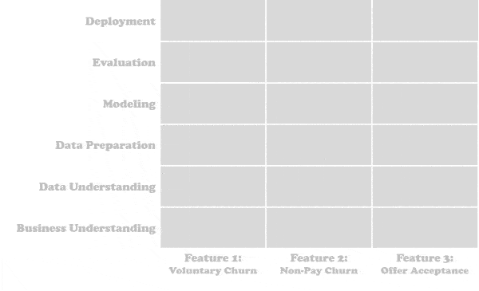
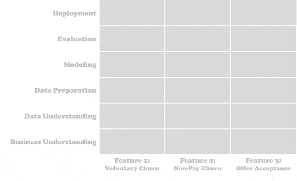

End to End Data Science
Contents
End to End Data Science#
Data Science#
Data Science 란 ?
“정형, 비정형 형태를 포함한 다양한 데이터로부터 지식과 인사이트를 추출하는데 과학적 방법론, 프로세스, 알고리즘, 시스템을 동원하는 융합분야다.”
(https://ko.wikipedia.org/wiki/데이터_사이언스)
데이터 사이언스는 우리가 가진 문제들의 해결책을 사람의 직관에 의존하던 방식에서 벗어나, 데이터와 액션 사이의 의사결정을 위한 다양한 분석 방법을 제공함으로써 정량적, 체계적, 합리적으로 의사결정 할 수 있도록 지식과 인사이트를 제공하는 총체적인 행위를 말합니다.
(https://datajourney.akvo.org/hubfs/Screen Shot 2020-07-28 at 12.08.42.png)
과거부터 다양한 형태로 수행되어 왔지만, 융합 학문이고 정립되어진지 얼마되지 않았기 때문에 데이터 사이언스에 대한 소개 및 범위는 적용 영역마다 조금씩 다르고 변화되고 있습니다. 그러다보니 데이터 사이언스 프로젝트를 위해 필요한 스킬의 경우도 매우 많고 다양합니다.
(https://miro.medium.com/max/1400/1*jd_xgOzAFw7rBklREtgOTQ.png)
End to End Data Science#
빅데이터 및 인공지능의 시대가 도래함에 따라 데이터 사이언스의 영역은 다방면으로 영역을 확대해 나가고 있습니다. 많은 도메인에서 데이터를 활용하여 도메인 문제들을 해결하는 사례들이 점점 보편화 되어 가고 있고, 이에 도메인의 문제를 데이터 기반으로 해결하려는 데이터 사이언스 프로젝트들이 우후죽순 생겨나고 있지만, 달콤한 열매를 맛보는 프로젝트는 소수에 지나지 않습니다.
데이터 사이언스의 정의에서도 유추할 수 있듯 문제의 정의부터 데이터를 통해 인사이트를 성공적으로 추출하기까지는 다양한 분야의 융합이 필요하기 때문에 프로젝트는 상당히 자유도가 높고 프로젝의 성공은 많은 실패를 동반하게 되는 경우가 많기 때문에 프로젝트의 수행기간 또한 깁니다. 프로젝트 실패의 주요 원인이 성공하기 위해 실패할 시간이 부족했기 때문이라는 우스게 소리가 나올 정도니까요.
게다가 데이터 사이언스의 특성상 인사이트를 얻는 과정은 분할되지 않은 통합적이고 창의적인 과정을 필요로 하기때문에 프로젝트를 공학적인 마인드로 분할 정복하기 쉽지 않습니다. 많은 프로젝트들이 공학적 마인드로 문제를 수평적으로 분해하여 프로젝트를 진행하다가 실패합니다.

(https://www.datascience-pm.com/wp-content/uploads/2020/08/crisp-dm-horizontal-waterfall-600x.gif)
데이터 사이언스 프로젝트의 성공률을 높이기 위해서는 아래와 같이 문제를 수직적으로 분해하여 진행하는 것이 좋습니다. 이러한 특성으로 인해 다양한 조직으로 구성된 통합 프로젝트 진행은 커뮤니케이션 오버헤드와 각 조직의 이해관계로 인해 진행 속도가 제한되며, 이는 마치 프로젝트에 데이터 사일로와 같은 영향을 주게 됩니다.

(https://www.datascience-pm.com/wp-content/uploads/2020/08/crisp-dm-vertical-agile-600px.gif)
이를 위해서는 데이터 사이언스 프로젝트 수행을 위한 범위, 방식, 조직을 최대한 문제를 수직적으로 분해 가능하도록 만드는 것이 중요합니다.
수행범위: 데이터 사이언스 프로젝트의 처음부터 끝까지
수행방식: 데이터 사이언스 방법론을 다양한 분석 기법을 이용하여 빠르게 반복 수행
수행조직: 프로젝트 수행을 위한 이해관계자들이 하나의 조직(권한, 책임, 성과를 가진)으로 수행
이 경우, 조직이 제약 없이 프로젝트 핵심에 집중하게 되며, 다양한 방법을 융합하여 빠르게 시도하고 배움으로써 빠르게 누적된 데이터 사이언스 역량을 통해 프로젝트는 높은 성공 확률을 가지게 됩니다.
저와 비슷한 생각을 제시하는 블로그 글이 있어 링크를 남깁니다.
이를 위해 데이터 사이언티스트들은 각자의 역량을 Data Science를 수행할 수 있는 End to End로 최대한 확장하는 것이 중요합니다.
Data Science Methodology#
데이터 사이언스를 효율적으로 진행하기 위해 다양한 방법론들이 존재 합니다.
Data Science Process Alliance 사이트에서는 CRIS-DM 뿐 아니라 KDD and Data Minig, SEMMA, Microsoft TDSP, 등등 다양한 방법론에 대해서 소개하고 있습니다.
CRISP-DM은 비록 1999년에 만들어졌지만, 큰 흐름상에서 현재까지 데이터 사이언스 방법론을 비교적 잘 설명해주고 있으며 아직까지 제일 많이 사용되는 프로세스 입니다.
이는 위 기사에서도 언급하고 있고, 아래 여러 설문을 통해서도 나타납니다.
(https://www.datascience-pm.com/wp-content/uploads/2020/10/process-google-search-volume-2019-2020.png)
CRoss Industry Standard Process for Data Mining (CRISP-DM)#
CRISP-DM 은 크게 6 단계로 이루어져 있으며, 아래 도시된 흐름으로 진행됩니다.

(https://www.datascience-pm.com/wp-content/uploads/2021/02/CRISP-DM.png)
Business understanding
비즈니스 목표 정의: 비즈니스 이해를 통해 기업 관점에서 성공 목표 및 평가 방식을 정량적으로 정의합니다.
프로젝트 목표 정의: 비즈니스 목표를 만족시키기 위한 프로젝트의 목표 및 평가 방식을 정략적으로 정의합니다.
프로젝트 상황 평가: 프로젝트의 요구 사항 및 자원 가용성 그리고 비용 분석을 통해 비용대비 성과의 생각하여 비즈니스 목표 및 프로젝트 목표를 조정합니다.
프로젝트 계획 생성: 기술과 도구를 선택하고 각 프로젝트 단계에 대한 자세한 계획을 정의하십시오.
Data understanding
데이터 수집: 필요한 데이터를 정의하고 수집합니다.
데이터 메타: 데이터 형식, 레코드 수 또는 필드 ID와 같은 속성을 문서화합니다.
데이터 탐색: 데이터를 쿼리하고, 시각화하고, 데이터 간의 관계를 탐색합니다.
데이터 품질: 데이터가 얼마나 깨끗하고 더러운지 품질 문제를 문서화합니다.
Data preparation: 선택된 모델링 알고리즘들에 필요한 데이터를 선택하고 준비합니다.
Modeling: 각 모델링 알고리즘을 통해 생성된 모델들 중에 평가를 통해 최적 모델을 선택합니다.
Evaluation: 최적화된 모델링들 중에 비즈니스 목표를 가장 잘 만족하는 모델링을 선택합니다.
Deployment: 프로덕트 환경에 적용/운영하면서 A/B 테스트 등을 통해 비즈니스 영향도를 측정하고 이를 기반으로 각 단계로 분기하여 반복수행하면서 개선합니다.
위 기사에서도 다루고 있듯이 E2EDS를 하기위한 방법론은 CRIS-DM 뿐 아니라 CRIS-DM 을 기반으로 좀 더 개량된 다양한 방법론들도 많습니다.
방법론은 프로젝트 계획 및 진행 시 많은 영감과 도움을 주기에 자신의 상황에 맞는지 평가해보고 적용하는 것이 필요합니다.
Coursera 에서는 Data Science Methodology 에 대하여 CRISP-DM을 기본으로하는 확장된 방법론을 소개합니다.

Business Understanding: 비지니스의 이해를 통해 풀어야 할 문제에 대한 정의와 프로젝트의 목표 및 결과를 설정.
Analytic Approach: 통계, 머신러닝 기술을 이용하여 프로젝트 결과를 위한 접근방법 정의.
Data Requirements: 데이터 모델링에 사용될 알고리즘에 따라 필요한 데이터의 요구 사항정의.
Data Collection: 데이터 모델링에 사용될 데이터 Raw Data 수집 방법 정의.
Data Understanding: 제공된 데이터에 대한 통계적, 시각적 방법을 통해 초기 데이터를 이해.
Data Preparation: Data Collection 을 통해 수집된 Raw Data 를 각 모델에서 필요한 입력 데이터 형태에 맞게 변형.
Data Modeling: Data Preparation 을 통해 제공된 훈련용 입력 데이터를 이용해 데이터 모델 훈련.
Model Evaluation: Data Modeling 을 통해 훈련된 모델을 이용해 테스트 데이터에 대한 모델 성능을 평가.
Build Data Product: 최종 선택된 데이터 모델을 이용하여 Data Product 을 구축.
Feedback: Data Product 사용자들의 Feedback 을 받아 전체 프로세스를 순환하면서 발전 시킴.
코세라 강의: https://www.coursera.org/learn/data-science-methodology
블로그에 올라온 강좌 서머리 들
Data Science Methodology — How to design your data science project
Data Driven Scrum#
Data Driven Scrum(DDS)은 애자일 방법론을 데이터 프로젝트 수행에 적용한 방법입니다. 애자일 방법론을 통해 데이터 프로젝트 수행시 팀의 협업과 커뮤니케이션을 개선하는 것을 목표로 합니다.
Data Science Process Alliance는 잘 알려진 다른 애자일 접근 방식(예: Scrum 및 Kanban)이 종종 데이터 과학 프로젝트의 고유한 요구 사항을 수용하지 못한다는 사실을 해결하기 위해 Data Driven Scrum을 만들었습니다.
https://www.datascience-pm.com/data-driven-scrum/
(https://www.datascience-pm.com/wp-content/uploads/2022/02/Data-Driven-Scrum-detailedFlow.jpg)
Data Scientist#
데이터 사이언스가 여러 도메인에서 사용되고 기술또한 빠르게 발전하면서 데이터 사이언티스트의 직군 또한 초기 데이터 사이언티스트라는 하나의 직군에서 좀더 세분화되고 있습니다.
이로인해 직군의 정의와 수행 범위가 시기 및 관점에 따라서 변경되고 있어 혼란 스럽기도 합니다만, 대략적으로 아래 소개된 글들을 통해 세분화된 직군들의 업무 정의 및 수행 범위를 파악할 수 있습니다.
데이터 사이언스의 정의, 범위, 프로세스, 직군 등에 대하여 짧게 잘 설명된 Youtube 영상입니다.
What is Data Science? - IBM Technology

Data Science Skills#
융합 학문이다 보니 데이터에서 인사이트를 추출하기위해서는 Statistical Data Analysis와 Machine Learning 및 Deep Learning을 포함하는 광범위한 분석 기법 및 도구들을 사용합니다. 맵상에 모든 스킬을 익혀야만 데이터 사이언스를 할수 있는 것은 아니니 단계적으로 영역을 확장한다는 느낌으로 프로젝트에서 필요한 기술부터 차근히 익여 나가는 것을 추천합니다.
The Data Science Process - A Visual Guide to Standard Procedures in Data Science

Data Science 직군 변화에 대한 고찰#


{kind=link}
{kind=link}
{kind=link}
{kind=link}
{kind=link}
{kind=link}
{kind=link}